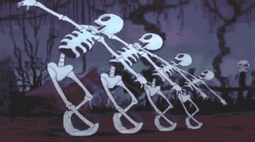
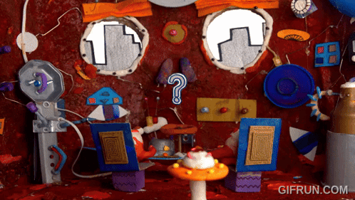

O Terror e Make é um podcast brasileiro apresentado por Karol Kaepstick, que combina dois universos bastante diferentes: a maquiagem e as histórias de terror. O projeto conquistou um público interessado em mistérios, acontecimentos sobrenaturais e relatos capazes de despertar curiosidade e medo. A proposta do programa é contar histórias assustadoras enquanto a apresentadora realiza maquiagens, muitas vezes explorando estilos artísticos e visuais relacionados ao universo sombrio. Durante os episódios, os ouvintes podem conhecer relatos enviados pelo público, lendas urbanas, casos misteriosos, experiências paranormais e histórias que envolvem acontecimentos inexplicáveis. Um dos diferenciais do podcast é justamente a maneira como une entretenimento visual e narrativo. Enquanto acompanha a transformação da maquiagem, o público também mergulha em histórias que exploram o suspense, o desconhecido e o sobrenatural. Além de proporcionar momentos de entretenimento, o projeto demonstra como a internet permite criar conteúdos originais a partir da combinação de diferentes interesses, aproximando pessoas que compartilham a paixão pelo terror e pela maquiagem artística. Se você gosta de histórias misteriosas, maquiagem e um bom suspense, Terror e Make pode ser uma ótima descoberta. Mas fica a pergunta: você conseguiria ouvir um episódio sozinho, no escuro e durante a madrugada?

Elio Mei é um artista musical conhecido por suas composições que exploram sonoridades do indie, bedroom pop e estilos alternativos. Suas músicas apresentam uma identidade própria, misturando melodias criativas, letras expressivas e uma atmosfera que pode transmitir diferentes sentimentos. Entre suas músicas mais conhecidas estão Partner in Crime, The Milk Carton, What's Going On?!, Never The Muse e One Man Circus. Suas composições apresentam uma estética que combina elementos delicados, nostálgicos e excêntricos, criando uma experiência musical bastante particular. Seu trabalho também se aproxima de estilos como goblincore e cottagecore, que valorizam elementos da natureza, da fantasia e de uma estética mais alternativa. Com uma sonoridade independente e uma identidade artística marcante, Elio Mei é uma opção interessante para quem gosta de descobrir músicas fora do convencional e explorar novos estilos musicais. Que tal conhecer suas músicas e descobrir qual delas mais combina com você?